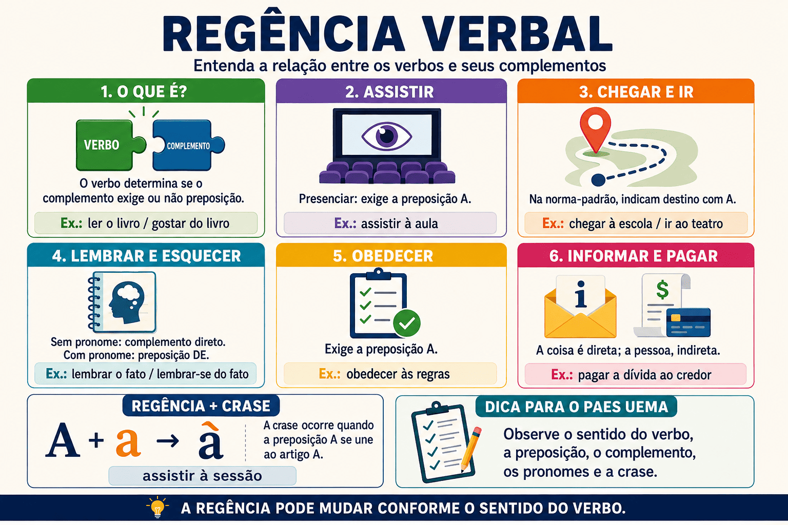

Regência Verbal para o PAES UEMA 2027: regras, exemplos e quiz com as obras obrigatórias
A regência verbal estuda a relação estabelecida entre o verbo e os termos que completam ou especificam o seu sentido. Em questões do PAES UEMA, esse assunto pode aparecer associado à transitividade, ao emprego de preposições, à crase, aos pronomes oblíquos e à análise de fragmentos literários.
Para resolver essas questões, não basta decorar que determinado verbo exige uma preposição. É necessário observar o sentido assumido pelo verbo no contexto, identificar o complemento e verificar se uma reescrita preserva a correção gramatical e o significado do trecho original.
Neste conteúdo, você aprenderá as principais regras de regência verbal, analisará construções presentes em Infância, de Graciliano Ramos, em Meu livro de cordel, de Cora Coralina, e nas crônicas de Lucy Teixeira, além de responder a um quiz de nível avançado voltado para o PAES UEMA 2027.

O que é regência verbal?
Regência verbal é a relação sintática entre um verbo regente e o termo que dele depende. Essa relação pode ocorrer diretamente ou com o auxílio de uma preposição.
Termo regente e termo regido
- Termo regente: o verbo que determina a construção do complemento.
- Termo regido: o complemento subordinado ao verbo.
- Preposição: elemento exigido por alguns verbos para ligar o complemento.
Exemplo: Os candidatos assistiram à palestra.
O verbo assistir, no sentido de presenciar, é o termo regente. A expressão à palestra é o termo regido. Nesse sentido, o verbo exige a preposição a, que se une ao artigo feminino a: a + a = à.
Regência verbal e transitividade
A regência está diretamente relacionada à transitividade. Conforme a maneira como se liga ao complemento, um verbo pode ser intransitivo, transitivo direto, transitivo indireto ou transitivo direto e indireto.
| Classificação | Relação com o complemento | Exemplo |
|---|---|---|
| Verbo intransitivo | Apresenta sentido completo e não exige objeto. | O caminhão chegou cedo. |
| Verbo transitivo direto | Exige objeto direto, sem preposição obrigatória. | A estudante leu o poema. |
| Verbo transitivo indireto | Exige objeto indireto introduzido por preposição. | O leitor assistiu à sessão. |
| Verbo transitivo direto e indireto | Exige dois complementos: um direto e outro indireto. | A vizinha informou a mudança à visitante. |
A classificação depende do contexto
Um mesmo verbo pode apresentar regências diferentes. Por isso, a análise deve começar pelo sentido construído no enunciado, e não por uma classificação memorizada isoladamente.
Verbos que mudam de sentido conforme a regência
Alguns verbos frequentemente cobrados em provas alteram o significado quando muda a forma de ligação com o complemento.
| Verbo | Sentido e regência | Exemplo |
|---|---|---|
| Assistir | Presenciar: exige a preposição a. | Assistimos à apresentação. |
| Prestar assistência: normalmente usado sem preposição. | O médico assistiu o paciente. | |
| Aspirar | Desejar, almejar: exige a preposição a. | O estudante aspira à aprovação. |
| Inspirar ou sorver: usado sem preposição. | Aspirou o perfume das flores. | |
| Visar | Ter como objetivo: exige a preposição a na tradição normativa. | O projeto visa à formação dos estudantes. |
| Pôr visto ou mirar: usado sem preposição. | O servidor visou o documento. | |
| Querer | Desejar: usado sem preposição. | Queria ouvir histórias. |
| Estimar ou ter afeto: exige a preposição a. | Queria aos amigos como irmãos. | |
| Implicar | Ter como consequência: usado sem preposição. | A desatenção implica prejuízo. |
| Antipatizar: exige a preposição com. | O personagem implicava com o vizinho. |
Estratégia para a prova
Se a questão apresentar duas construções com o mesmo verbo, substitua mentalmente o verbo por um sinônimo. Essa operação ajuda a perceber se o significado e a regência foram alterados.
Principais casos de regência verbal
Assistir
Presenciar: Os leitores assistiram à sessão.
Prestar assistência: O profissional assistiu os feridos.
Caber ou pertencer: Esse direito assiste ao candidato.
Chegar e ir
Na norma-padrão, os verbos chegar e ir, quando indicam destino, selecionam geralmente a preposição a. A preposição em, comum na fala cotidiana, costuma ser evitada em situações formais.
Norma-padrão: Cheguei à escola.
Uso coloquial: Cheguei na escola.
Obedecer e desobedecer
Os verbos obedecer e desobedecer exigem a preposição a: obedecer às regras, desobedecer ao regulamento, obedecer-lhe.
O candidato deve obedecer às instruções da prova.
O pronome lhe também pode representar o complemento: o candidato deve obedecer-lhes.
Lembrar e esquecer
Sem pronome, esses verbos podem ser transitivos diretos: lembrar o episódio e esquecer o compromisso. Nas formas pronominais, exigem a preposição de: lembrar-se do episódio e esquecer-se do compromisso.
O narrador lembrava os acontecimentos.
O narrador lembrava-se dos acontecimentos.
Informar
O verbo informar admite mais de uma construção:
- informar algo a alguém;
- informar alguém de algo;
- informar alguém sobre algo.
A organização informou o resultado aos candidatos.
A organização informou os candidatos do resultado.
A organização informou os candidatos sobre o resultado.
Pagar e perdoar
Esses verbos costumam apresentar a coisa como objeto direto e a pessoa como objeto indireto.
O comerciante pagou a dívida.
O comerciante pagou ao credor.
O comerciante pagou a dívida ao credor.
Preferir
Na norma-padrão, o verbo preferir estabelece uma comparação com a preposição a: preferir uma obra a outra. Construções como “preferir mais” e “preferir do que” devem ser evitadas em contextos formais.
Construção recomendada
Prefiro poesia a prosa.
Evite: “Prefiro mais poesia do que prosa”.
Regência verbal e crase
A crase pode ocorrer quando um verbo exige a preposição a e o termo seguinte admite o artigo feminino a ou as.
Como verificar a ocorrência da crase
- Identifique se o verbo exige a preposição a.
- Verifique se o termo seguinte admite o artigo feminino a.
- Se os dois elementos estiverem presentes, ocorre a fusão: à.
O público assistiu à apresentação.
O verbo assistir, no sentido de presenciar, exige a. O substantivo feminino apresentação admite o artigo a. Logo, ocorre crase.
Crase antes de possessivo feminino
Antes de pronome possessivo feminino no singular, o artigo pode ser facultativo. Por isso, são possíveis construções como chegar a nossa casa e chegar à nossa casa. A preposição exigida pelo verbo existe nos dois casos; o que varia é a presença do artigo.
Regência e pronomes relativos
Quando o complemento de um verbo é retomado por pronome relativo, a preposição exigida deve aparecer antes desse pronome.
Assistimos à discussão.
Esta é a discussão a que assistimos.
Esta é a discussão à qual assistimos.
Erro frequente
A construção “Esta é a discussão que assistimos” não atende à regência recomendada pela norma-padrão, pois elimina a preposição exigida por assistir no sentido de presenciar.
Regência verbal nas obras obrigatórias do PAES UEMA 2027
Nas obras literárias, a regência participa da construção do sentido e também pode revelar escolhas estilísticas ou usos próprios de determinada situação comunicativa. Na prova, é importante distinguir a descrição do trecho original de uma reescrita solicitada segundo a norma-padrão.
Crônicas de Lucy Teixeira
Fragmento: “não assistia à sessão de tal natureza”.
O verbo assistir significa presenciar e exige a preposição a. Como sessão admite artigo feminino, forma-se à sessão.
Fragmento: “o bonde [...] por ter de obedecer às paralelas dos trilhos”.
O verbo obedecer seleciona complemento introduzido por a. Em às paralelas, há a fusão da preposição com o artigo feminino plural.
Infância, de Graciliano Ramos
Fragmento: “Durante a prisão, lembrava-me desses exercícios com pesar.”
A forma pronominal lembrar-se exige a preposição de: lembrava-me de + esses exercícios = lembrava-me desses exercícios.
Fragmento: “O Estado não lhe pagava etapa e soldo”.
A expressão etapa e soldo indica aquilo que era pago e funciona como objeto direto. O pronome lhe representa o destinatário do pagamento e funciona como objeto indireto.
Meu livro de cordel, de Cora Coralina
Fragmento: “a vizinha da frente me informou que ela tinha se mudado”.
O verbo informar organiza dois complementos: o pronome me representa a pessoa que recebe a informação, enquanto a oração iniciada por que apresenta o conteúdo informado.
Fragmento: “Para chegar a nossa casa em ritmo de rotina”.
O verbo chegar seleciona a preposição a. Como o artigo antes do possessivo feminino singular pode ser empregado ou omitido, a reescrita chegar à nossa casa também é aceita pela norma-padrão.
Como a regência verbal pode ser cobrada no PAES UEMA?
As questões podem exigir que o candidato:
- identifique a preposição selecionada pelo verbo;
- classifique o complemento verbal;
- explique a ocorrência ou a ausência de crase;
- reconheça a função de um pronome oblíquo;
- recupere a preposição antes de um pronome relativo;
- compare duas regências possíveis do mesmo verbo;
- avalie a correção de uma reescrita;
- perceba alterações de sentido provocadas pela mudança da regência;
- diferencie escolha literária, uso coloquial e norma-padrão.
Roteiro de análise
- Localize o verbo.
- Determine o sentido que ele assume no trecho.
- Identifique os termos dependentes do verbo.
- Verifique se há preposição e se ela é exigida.
- Analise artigos, pronomes e possíveis ocorrências de crase.
- Compare o sentido do original com o da reescrita proposta.
Quiz de regência verbal com as obras obrigatórias
Quiz — Regência Verbal no PAES UEMA 2027 (nível avançado)
Questão 1 — Leia o fragmento das crônicas de Lucy Teixeira: “não assistia à sessão de tal natureza”. A respeito da construção destacada, assinale a alternativa correta.
Questão 2 — Em Infância, lê-se: “Durante a prisão, lembrava-me desses exercícios com pesar.” Qual reescrita preserva o sentido básico e atende à regência da norma-padrão?
Questão 3 — No verso de Meu livro de cordel, “a vizinha da frente me informou que ela tinha se mudado”, considere a organização dos complementos de informou. Assinale a análise adequada.
Questão 4 — Em Infância, a construção “O Estado não lhe pagava etapa e soldo” apresenta dois complementos. Qual alternativa os identifica corretamente?
Questão 5 — Nas crônicas de Lucy Teixeira, o bonde aparece “obedecer às paralelas dos trilhos”. Assinale a reescrita que mantém a regência e substitui corretamente o complemento por pronome.
Questão 6 — Considere o fragmento de Meu livro de cordel: “Para chegar a nossa casa em ritmo de rotina”. Sobre a ausência do acento grave, assinale a alternativa correta.
Questão 7 — Em Infância, lê-se que Bento Américo “chegou a professor de direito”. A ausência de crase antes de “professor” explica-se porque:
Questão 8 — Nas crônicas de Lucy Teixeira, encontra-se a sequência “duas horas de discussão a que fora ele obrigado a assistir”. Qual substituição do pronome relativo preserva a regência?
Questão 9 — No fragmento de Infância, “Queria ouvir histórias”, o verbo querer significa desejar. Assinale a alternativa em que esse verbo apresenta outro sentido e, consequentemente, outra regência.
Questão 10 — Analise as afirmações sobre os fragmentos:
I. Em “lembrava-me desses exercícios”, a preposição de é exigida pela forma pronominal lembrar-se.
II. Em “não assistia à sessão”, o acento grave registra a fusão entre a preposição exigida pelo verbo e o artigo feminino.
III. Em “me informou que ela tinha se mudado”, a oração iniciada por que expressa o conteúdo da informação.
IV. Em “chegar a nossa casa”, a ausência de crase demonstra a ausência da preposição exigida pelo verbo.
Está correto o que se afirma em:
Resumo de regência verbal
- A regência verbal descreve a relação entre o verbo e seus complementos.
- A transitividade e a regência dependem do sentido assumido pelo verbo no contexto.
- O objeto direto não apresenta preposição obrigatória.
- O objeto indireto é introduzido por uma preposição exigida pelo verbo.
- Assistir, no sentido de presenciar, exige a preposição a.
- Obedecer e desobedecer exigem a preposição a.
- Lembrar-se e esquecer-se exigem a preposição de.
- Informar admite mais de uma organização para seus complementos.
- A coisa paga é geralmente objeto direto; a pessoa, objeto indireto.
- A crase depende da presença simultânea da preposição a e do artigo a.
- A preposição exigida pelo verbo deve aparecer antes do pronome relativo.
- Em textos literários, a análise deve considerar a norma, o contexto e os efeitos expressivos.
Conclusão
Dominar a regência verbal exige compreender como cada verbo organiza seus complementos em um contexto específico. A simples memorização de listas pode ajudar na revisão, mas não substitui a análise do sentido, da transitividade e das preposições efetivamente presentes na oração.
No PAES UEMA, o conteúdo pode ser integrado à interpretação das obras obrigatórias. Fragmentos de Graciliano Ramos, Cora Coralina e Lucy Teixeira permitem avaliar não apenas regras isoladas, mas também pronomes, crase, reescrita e preservação de sentido.
Ao estudar, procure sempre localizar o verbo, identificar seu significado e examinar a ligação estabelecida com os demais termos. Esse procedimento torna a resolução mais segura e reduz a dependência de fórmulas decoradas.
Perguntas frequentes sobre regência verbal
O que é regência verbal?
É a relação sintática entre o verbo e os termos que completam seu sentido, com ou sem uma preposição obrigatória.
Como saber se o verbo exige preposição?
É necessário observar o sentido do verbo no contexto e consultar sua construção na norma-padrão. Verbos com mais de um significado podem apresentar regências diferentes.
Qual é a relação entre regência verbal e crase?
A crase pode ocorrer quando o verbo exige a preposição a e o complemento feminino admite o artigo a ou as.
“Assistir o filme” está correto?
Na tradição normativa cobrada em provas, recomenda-se assistir ao filme, pois assistir, no sentido de presenciar, rege a preposição a.
O correto é “chegar a” ou “chegar em”?
Em situações formais, recomenda-se o emprego da preposição a: chegar à escola, chegar ao local. A preposição em é frequente no uso cotidiano.
Por que “lembrar-se” exige a preposição “de”?
Na construção pronominal recomendada pela norma-padrão, usa-se lembrar-se de algo. Sem o pronome, também é possível lembrar algo.
O PAES UEMA cobra regência nas obras literárias?
A prova pode utilizar fragmentos literários para avaliar relações sintáticas, emprego de preposições, pronomes, crase, efeitos de sentido e correção de reescritas.
Continue estudando para o PAES UEMA
Referências
- BECHARA, Evanildo. Moderna gramática portuguesa. Rio de Janeiro: Nova Fronteira.
- CEGALLA, Domingos Paschoal. Novíssima gramática da língua portuguesa. São Paulo: Companhia Editora Nacional.
- CORALINA, Cora. Meu livro de cordel. São Paulo: Global.
- RAMOS, Graciliano. Infância. Rio de Janeiro: Record.
- TEIXEIRA, Lucy. Crônicas de Lucy Teixeira: cenas do cotidiano de São Luís - 1947. Organização de Ceres Costa Fernandes. São Luís: Edições AML.
Explore Outros Conteúdos
Continue seus estudos acessando outras seções do site Mestre Kira: